Tester handbook · 18 Nov 2026 · beta, confidential
SQUAWK
What it is, the first minute, then every part of the device. Beta notes and how to send feedback are in chapter 11.
Notation: keys appear as LIVE, 2ND, ●, display text as PRESS ▶ TO PLAY. L and R are the two knobs. “2ND, then X” means: tap 2ND, then tap X.
01What SQUAWK is
SQUAWK is a groovebox for iPhone: drums, synth and sampler on one screen, played like a hardware device.
It has 16 pads, two knobs, a part switch and nine keys. There are no menus and no second screen.
Three parts at once. DRUMS has 16 kits, SYNTH has 16 instruments, SAMPLER has 16 banks for your own sounds. All three always play. The switch picks the part you edit.
Played by hand. Every beat comes from the pads, the steps, or ● and ▶. SQUAWK does not compose for you. STYLE offers ready-made pieces as a starting point.
Your own sounds. Record with the microphone, shape on 16 pages, keep the result in 16 banks. The banks belong to the device, so every track can use them.
Everything is labelled. Hold any key and the display explains it.
Offline. No account, no ads, no data collection. No internet needed.
Everywhere. iPhone, iPad and Mac with Apple silicon, and as an AUv3 instrument inside music apps.
The name: “squawk” is the transponder code in a cockpit, and also a harsh, croaking sound. The cockatoo between the knobs is an emblem, not a control.
Video A “Make it”, 25 s: record a knock onto a pad, filter it in SHAPE, tap a beat in STEPS, press ▶, add an effect.
02The first minute
Open SQUAWK. The ▶ key breathes orange. Line 2 says PRESS ▶ TO PLAY.
Press ▶. The piece RAIN plays, a 2-step garage groove at 132 BPM. It sits in track slot TR 01.
You are in DRUMS · LIVE with the kit PUNCH. Tap the pads to play drums.
From here, a short tour shows you the device, one step at a time.
The tour
The control to use next breathes orange. Line 2 names the step. Tap the orange control and the next step follows. Between steps there are 2 to 4 seconds to listen.
#
Orange
Line 2
1
▶
PRESS ▶ TO PLAY
2
SYNTH on the switch, after 4 s of beat
SYNTH · ALL THREE PLAY
3
a pad, bottom left (any pad counts)
PLAY ALONG ON THE PADS
4
MASTER
MASTER = EFFECTS ON ALL
5
the pad STUTTER
HOLD STUTTER
6
SHAPE
SHAPE THE SYNTH
7
the pointer of knob L
TURN L · SEE THE CURVE
8
DRUMS on the switch
DRUMS · WRITE A BEAT
9
STEPS
STEPS = THE 16 STEPS
10
●
● = WRITE
11
step 3 (any step counts)
TAP A STEP TO SET IT
12
2ND, then the pad SAVE
2ND, THEN SAVE
13
2ND, then STEPS
2ND, THEN STEPS: STYLE
14
SAMPLER on the switch
SAMPLER · ● + HOLD = MIC
Any other key, the switch, 2ND or a knob ends the tour quietly.
Pads stay free unless one pad is orange. So you can play along and set steps without leaving the tour.
The tour never presses anything for you and plays nothing by itself. What you do in SAVE, STYLE or with the microphone is up to you.
An ended tour starts again on the next cold start, until you have finished it once. After that it does not come back. RESET · LIKE NEW starts it again.
With Reduce Motion, the orange light glows steadily instead of breathing. The plug-in has no tour.
Orange means “next step here”. Orange is used for nothing else. White means on, selected or playing, and does the same during the tour as later. Red means writing.
STYLE: 16 ready pieces
Tap 2ND, then STEPS. The engraving above STEPS reads STYLE. The pads now show 16 pieces.
Row
Pad 1
Pad 2
Pad 3
Pad 4
1
RAIN
NIGHT
FEVER
COMET
2
FOUND
NEON
GOLDEN
HOUSE
3
LOFI
DISCO
TRAP
DEEP
4
TECHNO
BREAKS
AMBIENT
DUB
Pads 1 to 7 are full pieces with four patterns each. Pads 8 to 16 are genre starting points with one pattern each. Details in chapter 5.
A tap replaces the whole track: all patterns, tempo, swing, key, sound settings and the kit. It plays at once.
If the track holds your own work, SQUAWK asks first: REPLACE YOUR TRACK? TAP AGAIN. The red LED blinks. Tap the same pad again to replace. Any other input cancels.
An empty track, or a piece you have not changed, is replaced without asking. So you can listen through all 16.
STYLE stays open. ▶ stops and starts without closing it. 2ND or another key closes it.
One undo step brings back what was there: 2ND, then ●.
STYLE keeps the track name, the effect amounts and the sampler banks.
Keep your work with SAVE. In this beta, a cold start throws away everything you did not save. See chapter 11.
For a walk through the eight store images, see chapter 12.
03The device
From top to bottom:
Engraving: left a status LED and “MIDI IN · OUT”. The LED lights while MIDI is connected. Right “MIC · AUv3”.
Display: the big line shows what the knobs set right now. Usually that is the sound (drum, instrument or sample). In SHAPE it is the page, in MASTER the effect. Line 2 says what is happening: a knob value, a held step, a hint or the status line. The pixel field on the right shows the pattern of all parts, values and the curve of a SHAPE page. Top right shows ■ or ▶, with a red ● while writing.
Two knobs, L and R: TONE and DECAY are engraved below, FILTER and ATTACK above.
Part switchDRUMS · SYNTH · SAMPLER, and next to it the key MASTER.
16 pads: the label on a pad says what it does now. Engraved above each pad is a second function: 2ND, then the pad.
Keys:LIVE · STEPS · SOUNDS · SHAPE, below them 2ND · PATTERN · ● · ▶. Engraved above: STYLE over STEPS, MUTE over SOUNDS, RESET over SHAPE, CHAIN over PATTERN, UNDO over ●.
Three rules.
● means writing. Without ●, a tap in STEPS only listens. With ●, a tap sets or deletes a step, and ● with ▶ records what you play.
2ND works like on a calculator. Tap 2ND, then one key or pad. That opens the engraved function. 2ND is never held.
2ND, then ● is UNDO. It goes back up to 64 steps. Press it again to go further back.
Views
LIVE is home. The pads play sounds. Exactly one of LIVE, STEPS and SHAPE is lit. Pressing STEPS or SHAPE again takes you back to LIVE.
STEPS shows the 16 steps of the selected part.
SOUNDS picks a kit, an instrument or a bank. It stays open. LIVE glows dimly next to it as the way back.
SHAPE opens 16 pages to change the selected sound.
PATTERN shows 16 patterns. It stays open, so you can listen through them. A tap picks a pattern and plays it.
MASTER comes on top of the current part. While MASTER is on, LIVE and STEPS work on the 16 effects. Tap MASTER again or tap a part to leave. SHAPE always shapes the instrument and ends MASTER.
▶ plays and stops. Stop is stop: all voices end within 30 ms, reverb, delay and the reflections of a place within 50 ms.
Knobs
Drag up or down. The travel is long and fixed. Double-tap resets to the default. The value appears in the display.
Where
L
R
LIVE
TONE
DECAY
LIVE after 2ND + knob
FILTER
ATTACK
SOUNDS
the two other sound controls of the instrument, e.g. DRIVE · LEVEL (chapter 4)
STEPS
DRUM, NOTE or PAD
VELO
SHAPE
the pair of the open page, e.g. DISTANCE · PLACE on SPACE (chapter 6)
MASTER × LIVE
AMOUNT (fully left = dry)
character of the effect, e.g. TIME
MASTER × STEPS
EFFECT
AMOUNT
TEMPO · SCALE · SAVE
BPM · ROOT · LETTER 1
SWING · OCTAVE · LETTER 2
Whenever the knobs set something that is not engraved, both engravings dim. Line 2 then names the pair, for example Ⓛ DRIVE · Ⓡ LEVEL.
TONE and DECAY mean: drums tune and decay, Plaits-based synths timbre and decay, SQUELCH cutoff and filter-envelope decay, SAX, GUITAR and E-BASS tone and decay, sampler pitch and length.
FILTER is a DJ filter. Centre is off, left is low-pass down to 100 Hz, right is high-pass up to 5 kHz. ATTACK goes from instant to 1 s. Both work the same on every sound.
In LIVE, 2ND and then turning a knob (or a double-tap) locks both knobs to FILTER · ATTACK. 2ND stays lit and the pads keep playing. The next press on 2ND goes back. STEPS also goes back.
Values belong to the sound and are saved with the track.
Lights and feel
White: on, selected, playing. Red: writing, and a blinking red LED means “tap again to confirm”. Orange: the next step of the tour.
Every key and pad has a status LED top right. On a pad, the LED means “now” (selected, playing). The bar at the bottom means “something is there” (used, in the pattern, changed).
Engravings are dark, like engraved stone. They glow white while 2ND is armed. A second function that is open lights its engraving.
Keys click and the switch snaps. Knobs have a detent per value, with a stronger one in the centre. There is no haptic feedback while you play pads or set steps. iPad and Mac have no haptics.
Pads trigger on touch-down.
04Drums, Synth, Sampler
DRUMS
With the switch on DRUMS, the 16 pads are the 16 drums of a kit. In LIVE a tap plays the drum and selects it. The knobs set TONE and DECAY of that drum. In SOUNDS a pad picks one of 16 kits, and the knobs set DRIVE · LEVEL.
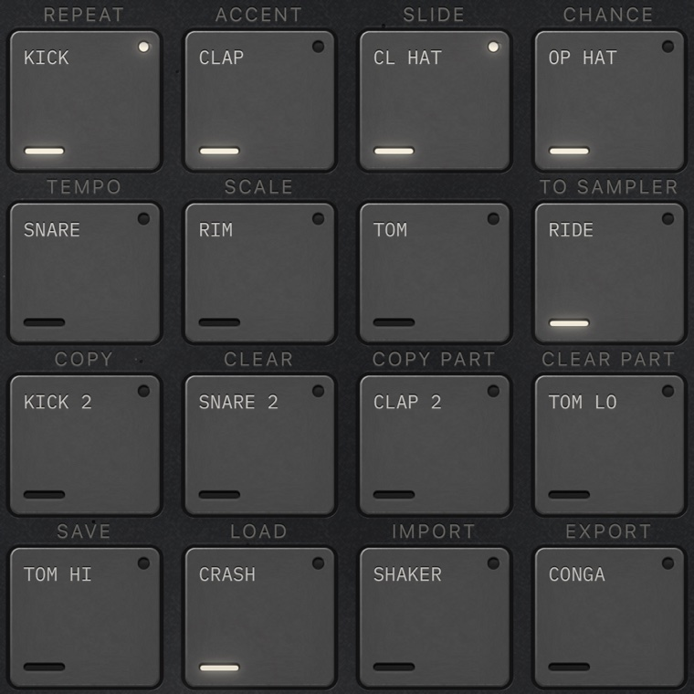
DRUMS · LIVE, kit PUNCH. Each pad carries its drum. The second function is engraved above it.
The closed hat cuts off the open hat in every kit.
All 16 kits play at about the same loudness.
Kit
Source
Character
MODULAR
synthesised
hard, short
PUNCH
drum machine samples
punchy, clap up front
BLIP
analogue synthesis
tight, clicky, cowbell and shaker
BOOM
drum machine samples
deep kick, congas, claves, maracas
TINY
drum machine samples
bright, short, cymbals
HEAVY
drum machine samples
heavy, snap and cowbell
SOFT
synthesised
soft and long, wood, bell
HAZE
synthesised
deep, round, with room
IRON
analogue with recorded hit layers
rough, metallic, loud
DUSTY
samples
dusty, vinyl, pedal
RUSTY
acoustic kit
open
BRUSH
acoustic, brushes
brushes, stir, swish
STUDIO
acoustic studio kit
ghost notes, half-open
DRY
samples
dry, snap, splash
HAND
hand percussion
cajon, djembe, darbuka, bongo
RETRO
old kit, vintage miking
tight and loose hats
SYNTH
With the switch on SYNTH, the pads are notes of a scale. The lowest is bottom left, the root note is brighter. The synth plays one note per step, and tails may overlap. Scale, root and octave are set with 2ND, then SCALE. In SOUNDS a pad picks one of 16 instruments.
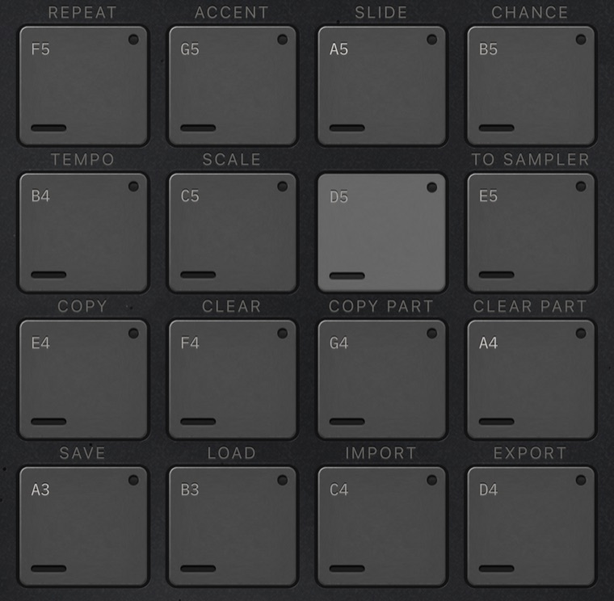
SYNTH · LIVE with ANALOG. Every pad plays a note of the scale.
Instrument
Type
Knobs in SOUNDS
ANALOG
bass, clean, two oscillators in unison
MORPH · LEVEL
SQUELCH
dedicated acid voice with diode filter, accent and slide (see below)
RESONANCE · ENV
FOLD
snappy pluck
MORPH · LEVEL
FM
electric piano with chorus
MORPH · LEVEL
WAVES
lead with vibrato and glide
MORPH · LEVEL
PHASE
stab
MORPH · LEVEL
ORGAN
organ with drawbars
MORPH · LEVEL
CHORDS
Every pad plays the chord of its scale degree. In MINOR, MAJOR, DORIAN and PHRYGIAN these are major, minor or diminished triads; SHAPE · MODEL turns them into sevenths. In the pentatonic scales, BLUES and CHROMA they are fifth or fourth chords.
MORPH · LEVEL
STRINGS
string machine
MORPH · LEVEL
SUB
sine one octave lower, down to C1 with octave −1
MORPH · LEVEL
SAX
multisampled tenor sax
SWELL · LEVEL
GUITAR
multisampled jazz guitar
SWELL · LEVEL
PLUCK
plucked string
MORPH · LEVEL
BELL
bell
MORPH · LEVEL
VOWEL
sings vowels, does not speak
MORPH · LEVEL
E-BASS
multisampled finger bass
SWELL · LEVEL
Every kick ducks the basses (ANALOG, SQUELCH, SUB, E-BASS) by up to 5 dB and the pads (ORGAN, CHORDS, STRINGS) by up to 3 dB. This is fixed, with no control, and sounds the same in the app, in EXPORT and in the AUv3. Kicks from the sampler do not duck.
SQUELCH
SQUELCH is a dedicated voice for acid bass lines, not a general-purpose synth.
Diode filter: gentler slope and softer resonance. At high resonance it loses more bass.
Accent wow: several accents in a row open the filter further each time. After a break, the first accent sounds normal again.
TONE = cutoff, DECAY = decay of the filter envelope (0.05 to 2.45 s).
SOUNDS: RESONANCE and ENV (filter envelope amount).
SHAPE · MODEL: OSC with two detents, saw or square, equally loud.
2ND, then ACCENT, knob L = BITE: how hard accents hit, how far they open the filter, and how much accents in a row build up.
2ND, then SLIDE, knob L = GLIDE: the slide time.
SHAPE · DRIVE distorts after the voice.
SAMPLER
SAMPLER · LIVE, bank 1. Each pad plays a sound of the bank. Free pads show a microphone.SAMPLER · SOUNDS. Each bank shows its name and type (KIT, NOTES, SLICES). Bank 7 here comes from a sample pack. Free banks show a microphone.
The sampler works like DRUMS. SOUNDS shows 16 banks, LIVE the 16 pads of the selected bank. Banks belong to the device, not to a track. So a recording stays, and every track and the AUv3 see the same sounds. Sound settings such as TONE, DECAY and SHAPE values belong to the track.
Type
What is in it
How it plays
KIT
16 single sounds, recorded pad by pad
like drums, each pad with its own step lane
NOTES
one short pitched sound, tuned to the nearest C
on the pads in the scale
SLICES
one longer recording, cut at its hits into up to 16 pieces
each piece on a pad, like a KIT
SQUAWK decides the type from the content. You never pick it in advance.
Factory banks: bank 1 is the start bank, a KIT with BUMP, CLAP, CLINK, POP, DROP, KEYRING, RIP, SQ and COCKATOO. Seven pads are free. Banks 2 to 4 hold KEYS, BASS and VIBES (NOTES). Banks 5 and 6 hold TABLA and BREAK (SLICES). Banks 7 to 16 are free.
Recording needs ● and a stopped sequencer. With the switch on SAMPLER, turn ● on. In LIVE, hold a pad: the recording goes onto that pad. In SOUNDS, hold a bank: the recording fills the whole bank as NOTES or SLICES. Recording starts when your finger touches down and ends when you let go, after 60 s at most. Without ●, a tap only selects.
Microphone access: iOS asks the first time ● goes on with SAMPLER selected. If you deny it, the display shows NO MIC · ALLOW IN SETTINGS.
After recording, silence is trimmed and the peak is set to −1 dBFS. The pad gets the first free two-letter name (AA, AB …). The glow tip SHAPE IT · NAME IT appears. While recording, the waveform runs through the pixel field.
Protection: if another track uses the sound, the first hold asks: USED IN 3 TRACKS · HOLD AGAIN.
Name a sound on the SHAPE page NAME. Clear it with RESET · SOUND.
TO SAMPLER (2ND, then the pad) turns any drum or synth sound, with all its settings, into a sample on the sampler pad you used last, or into a NOTES bank. Resampling without recording.
IMPORT puts an audio file onto the sampler pad you used last, or makes it a NOTES bank.
Stereo: pack sounds, imported files and TO SAMPLER stay stereo. Microphone recordings and the factory banks are mono.
Memory: 200 s for all banks together. Stereo counts double. When it is full: SAMPLER FULL.
In SOUNDS the knobs set START and LEVEL. In LIVE, TONE is pitch and DECAY is length.
Sample packs
Put a WAV pack, as a zip or a folder, into Files › On My iPhone › SQUAWK › PACKS. SQUAWK reads new packs whenever the app becomes active. It sorts the sounds by role and makes up to three banks, starting at bank 7: a KIT laid out like the factory kits, plus NOTES and SLICES.
The selection is not random. For each role, the most typical and the most contrasting sound go onto the pads.
NOTES and SLICES are normalised to −1 dBFS. A KIT keeps its levels.
A glow tip reports the result, e.g. LO-FI BEATS → 3 BANKS · LB. The whole import is one undo step.
WAV, AIFF, FLAC, MP3, M4A and CAF are read. RAR and 7z are not: UNZIP FIRST. Damaged or oversized archives show ZIP DAMAGED or TOO BIG.
If a pack KIT bank is selected on the SAMPLER, STYLE puts the drum lines onto its pads instead of the kit.
From a Mac, you can copy packs to the iPhone through Finder file sharing.
05STEPS and the sequencer
DRUMS · STEPS. Steps of the selected drum are bright, steps of other drums dim. “KICK +2” means two more drums sit on that step.
16 steps, 16 patterns per track. Timing is sample-accurate and runs in the audio thread.
Without ● a tap on a step only listens, even when stopped. An empty step stays empty and the display says ● = WRITE STEPS.
With ● a tap sets or deletes a step. Knob L picks the drum, the note (all notes of the scale over four octaves) or the sampler pad. Knob R sets the velocity (VELO). With no step held, this applies to new steps. With a step held, it changes that step.
Drums in STEPS: a tap with ● only affects the selected drum. So kick and hat can share a step. Holding a step shows all drums on it.
Move a step: with ●, hold the step and turn knob L. The step moves to another drum or note.
Parameter lock: with ●, hold a step, tap 2ND, turn a knob. TONE and DECAY then change for that step only. Double-tap the knob to remove the lock. A dot on the pad marks a lock, an effect or CHANCE.
Live recording:● and ▶. From a stop, SQUAWK counts in one empty pass. New hits add to what is there. ▶ stops and ends the recording. Live input is quantised to 16ths.
Click: there is no metronome switch. The click plays while the pattern has no drums, and stops once a drum is in. It never reaches EXPORT or MIDI out.
Pattern length: in TEMPO, a pad sets the length from 1 to 16 steps. With 12 steps the count-in counts three.
Tempo and swing: 60 to 200 BPM in whole steps, with a detent every 5 BPM. Knob R sets the swing.
PATTERN and CHAIN
PATTERN shows patterns P 01 to P 16. A tap picks and plays. While playing, the switch happens at the end of the current pass. The view stays open until you press PATTERN again, LIVE, STEPS or SHAPE.
The first empty pattern is labelled NEW. An empty pattern does not start silence. In PATTERN it says EMPTY · LIVE, THEN PADS OR 2ND STYLE. In LIVE, after a short pause with an empty pattern and nothing playing, it says EMPTY · TAP PADS OR 2ND STYLE.
CHAIN (2ND, then PATTERN, or 2ND while PATTERN is open) shows the current chain. The first tap starts a new chain from that pattern, further taps add to it, up to 64 links. ▶ plays the chain. The position shows in the status line, e.g. 1/4. Picking a pattern directly ends the chain.
The 16 second functions
Tap 2ND, then the pad. Rows are grouped by theme.
Row
Pad 1
Pad 2
Pad 3
Pad 4
Steps
REPEAT
ACCENT
SLIDE
CHANCE
Sound, tempo
TEMPO
SCALE
(none)
TO SAMPLER
Pattern, part
COPY
CLEAR
COPY PART
CLEAR PART
Files
SAVE
LOAD
IMPORT
EXPORT
The third pad of row 2 has no second function. STYLE now sits above STEPS.
Function
What it does
REPEAT
A step fires 2, 3 or 4 times in a row, for rolls. Each tap counts up, one more tap turns it off.
ACCENT
A step hits harder. Knob L (BITE) sets how hard: centre is the default, far left no effect, far right double. BITE is stored per sound.
SLIDE
A note glides into the next one. Knob L (GLIDE) sets the glide time per sound. It is the same value as on SHAPE · LEGATO.
CHANCE
Each tap on a step cycles: always → 75 % → 50 % → 25 % → 1:2 → 2:2 → 1:4 → 4:4 → always. 1:2 plays in the first of every two passes, 2:2 in the second (the answer). 1:4 plays in the first of every four passes, 4:4 in the fourth (the fill). Passes count from start or from switching to the pattern. Skipped steps trigger nothing, not even MIDI.
TEMPO
Knob L = BPM, knob R = swing, pads = pattern length. Stays open until 2ND.
SCALE
Pads pick one of eight scales: PENT MIN, PENT MAJ, MINOR, MAJOR, DORIAN, PHRYGIAN, BLUES, CHROMA. Knob L = ROOT, knob R = OCTAVE of the instrument (−1 to +1, not on drums). Existing steps keep their notes.
TO SAMPLER
Turns the shaped sound into a sample on the sampler pad you used last.
COPY
Copies the pattern to the pattern you tap. Work continues there.
CLEAR
Empties the pattern, all parts. The glow tip CLEARED · 2ND ● = UNDO reminds you of undo.
COPY PART
Copies the steps of this part to another kit, instrument or bank, which plays them with its own sound.
The keys have second functions too: 2ND, then STEPS = STYLE, SOUNDS = MUTE, SHAPE = RESET, PATTERN = CHAIN, ● = UNDO.
STYLE in detail
STYLE is the one place for ready-made material. It replaces the whole track (see chapter 2). The pieces use only factory sounds. Each sets tempo, swing, key and kit, and the sound settings of what it plays.
Pad
Piece
Style
BPM
Key
Kit
1
RAIN
UK garage, 2-step, the start piece
132
G minor
PUNCH
2
NIGHT
acid techno with SQUELCH
128
A minor
PUNCH
3
FEVER
post-club dembow
100
D minor
BOOM
4
COMET
jungle with chopped breaks
172
F minor
DRY
5
FOUND
beat from everyday sounds
90
D minor
DUSTY
6
NEON
house with chords
122
G minor
PUNCH
7
GOLDEN
pop with guitar
110
A minor
STUDIO
8
HOUSE
genre
124
G minor
PUNCH
9
LOFI
genre
78
D minor
DUSTY
10
DISCO
genre
118
A minor
PUNCH
11
TRAP
genre
140
F minor
HEAVY
12
DEEP
genre
120
D♯ minor
SOFT
13
TECHNO
genre
132
F minor
IRON
14
BREAKS
genre
130
D minor
DRY
15
AMBIENT
genre
80
C dorian
HAZE
16
DUB
genre
118
A minor
HAZE
The seven pieces have four patterns each. Pattern 1 is a full groove that leaves one part free to play along. Patterns 2 to 4 bring build-up, break and peak. Find them with PATTERN.
CHANCE keeps four bars alive inside one pattern (1:2 and 2:2 as call and answer, 4:4 as a fill).
The sound comes from the sound settings, not from locks on whole lanes. So every knob works.
Without its own name, the track is called after its piece, e.g. RAIN · PTN 01 · 132 BPM. SAVE gives it a two-letter name.
Common terms
SQUAWK uses its own words. Two of them mean something different from the usual; they are marked.
SQUAWK
Usual term
Note
TRACKdifferent
project, set
A whole project. 15 slots.
PART
track, lane
DRUMS, SYNTH, SAMPLER. MASTER is the sum.
Step with ●
trig, grid recording
STEPS + ●, then tap.
● + ▶ in LIVE
live recording, overdub
Quantised to 16ths.
Step + 2ND + knob
parameter lock
TONE and DECAY only.
Hold step + knob L
note or instrument of a trig
Moves the step, sets no lock. Hint: 2ND + KNOB = LOCK.
CHANCE
probability, trig conditions
75/50/25 %, 1:2, 2:2, 1:4, 4:4.
REPEAT
ratchets
2×, 3×, 4×.
RETRIGdifferent
often a per-step ratchet
Here an effect on the sum in MASTER.
CHAIN
pattern chain
Up to 64 links, no song editor.
MASTER × LIVE
performance FX, punch-in FX
Works while held.
MASTER × STEPS
FX locks
A separate effect lane.
SHAPE
sound edit
16 pages with pixel graphics.
TO SAMPLER
resampling
As a one-shot, no recording.
RESET
init, factory reset
From one sound to everything.
EXPORT
bounce, render
Sum as WAV. Single parts via SOLO.
06SHAPE: 16 pages per sound
SHAPE opens 16 pages for the selected sound. A pad picks the page, knobs L and R set its pair, and the pixel field draws the effect. Each row has a theme: source, colour, envelope, movement. Values belong to the sound and are saved with the track. Pages that do nothing on the current instrument are dark. A bar on a page means it was changed.
The big line shows the page. Line 2 shows the instrument and the knobs, e.g. ANALOG · Ⓛ FILTER · Ⓡ RESO.
When stopped, each change plays the sound briefly. While playing, you hear it in the pattern.
Double-tap a knob for the default. Every knob move is one undo step.
Leave with SHAPE again or LIVE. ● in SHAPE goes to LIVE with ● on.
The 16 page pads in SHAPE, here with ENV selected.
Source
01MODEL
L MODEL; on SQUELCH: OSCR named per model (DETUNE, RATIO, CHORD, SPEAKER, BAND, MATERIAL, ENERGY …); on SQUELCH: none
Picks the synthesis model of a Plaits-based synth, from VA VCF to HAT in 22 detents. R sets the character of the model. A changed model shows its name. On SQUELCH, L picks saw or square. Dark on SAX, GUITAR, E-BASS, drums and sampler.
YOYO (after MODAL) is a string of masses. Its overtones bloom and come back by themselves, like a yo-yo. With YOYO, R is ENERGY: 16 detents in four zones. STILL (1–3) is a steady tone. BREATH (4–8) lets one overtone come and go; detent 6 is the default (double-tap). BLOOM (9–12) brings many overtones, then back home. STORM (13–16) never comes back. VELO per step scales the energy, so louder steps breathe faster and deeper. TONE sets the starting shape, from dark to plucked. Pause on ENERGY and line 2 explains the zone.
Pixel field with YOYO: the very first time, a short opening with the red dot. After that, the return curve of the detent. While a note sounds, the string moves live.
02TONE
L TONE (same value as the knob TONE)R as in SOUNDS: MORPH, SWELL or ENV; on synthesised kits CRACK
Sets the colour of the source. On synthesised kits (MODULAR, BLIP, SOFT, HAZE, IRON), CRACK sets the click of the kick, the rattle of snare and clap, and the noise of the hats. Dark on sample kits.
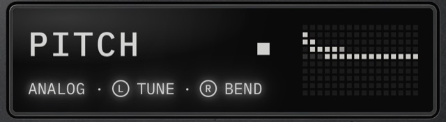
03PITCH
L TUNER BEND
Tunes the sound by ±24 semitones. R lets the pitch fall or rise after the hit.
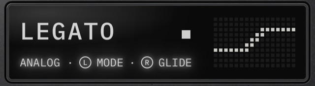
04LEGATO
L MODER GLIDE
L switches between MONO and LEGATO, R sets the glide time. Synth instruments only.
Colour
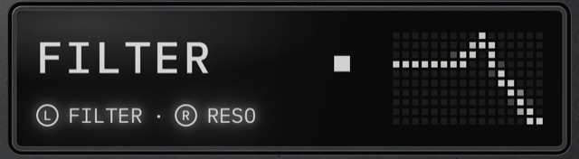
05FILTER
L FILTER (same value as on the 2ND layer)R RESO
DJ filter: centre off, left low-pass, right high-pass. R sets the resonance.
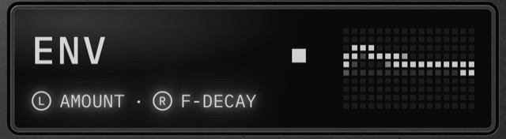
06ENV
L AMOUNTR F-DECAY
Filter envelope with up to ±6 octaves. R sets how fast it decays.
07DRIVE
L DRIVE (on drums the same value as DRIVE in SOUNDS)R LEVEL
Saturation and level of the sound.
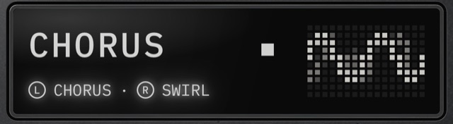
08CHORUS
L CHORUSR SWIRL
L sets the chorus amount (stereo width), R its rate from 0.1 to 6 Hz. Far right it is almost vibrato. Synth instruments except SQUELCH.
Envelope
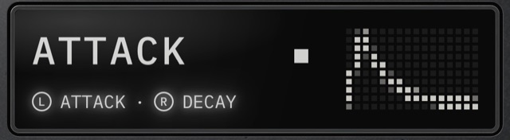
09ATTACK
L ATTACK (same value as on the 2ND layer)R DECAY (same value as in LIVE)
Fade-in and decay.
10SUSTAIN
L SUSTAINR RELEASE (same value as GATE, right)
How loud a held note stays. R sets how long it rings after release. With page 09 the whole envelope sits on two pages. Synth instruments except SQUELCH.
11GATE
L GATER RELEASE
Note length in the sequencer, and the ring-out after release.
12SPACE
L DISTANCER PLACE
The sound stands at a place, and the place is built to the tempo. DISTANCE has 16 detents from 0.3 to 40 m; the default is 2.4 m. Nearer is louder, farther is quieter, darker and later. Line 2 shows e.g. DISTANCE 8 M.
PLACE has 16 places: BOX, BOOTH, KITCHEN, CLUB, HALL, CHURCH, CAR PARK, TUNNEL, YARD, CANYON, FIELD, FOREST, LAKE, SNOW, NEXT ROOM, STREET. BOX is the default and sounds as before, with the usual reverb and delay. Where a place has walls, they answer on the tempo grid, e.g. PLACE HALL · 1/16. Pause on PLACE and line 2 describes the place.
The pixel field shows the place from above, with you at the bottom. On each hit, every wall lights up when its reflection reaches you. Bass stays in the centre at every place. TO SAMPLER always renders in BOX.
Movement and extras
13LFO
L DEPTHR RATE
Depth and rate (0.1 to 20 Hz) of the LFO. It restarts with every hit.
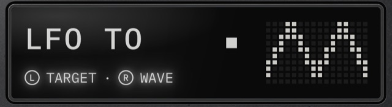
14LFO TO
L TARGETR WAVE
L picks the LFO target (PITCH, FILTER, TIMBRE, LEVEL), R its waveform (SIN, TRI, SQR, SAW, S&H).
15NAME
L LETTER 1R LETTER 2
Gives a sampler sound a two-letter name. It applies at once and shows in the pixel field. Sampler sounds only.
GENE LABon sampler pads
16GENE LAB
L PARTNERR MUTATE
Crosses the sound with a partner over four genes: CLICK (the attack), BODY (the tones in it), NOISE (noise and air) and TAIL (the decay). PARTNER picks the second sound, similar ones first; on a pack sound, the pack comes first. MUTATE has 16 detents, from your own sound through mixes to the partner itself. Each detent puts the result on the pad and plays it. The knobs follow your finger smoothly; only the detent you stop on is computed. Pause on PARTNER or MUTATE and line 2 explains it. When you leave the page, the result stays, with a name mixed from both parents. One undo step per visit. Works on sampler pads in KIT and NOTES banks. Not on SLICES, not on drums yet, and not in the AUv3.
07MASTER: 16 effects
MASTER puts the effects on the sum. In LIVE an effect works while its pad is held. Knob L sets AMOUNT, knob R the character of the effect you played last. The big line shows the effect and the pixel field draws its shape. With STEPS and ● you write effects onto steps: L picks the effect, R its amount.
AMOUNT fully left is dry, for all 16 effects. Up to about a quarter, the effect fades in smoothly. So you can turn an effect in and out live while you hold it. The default is 70 %.
With ● and ▶ in MASTER × LIVE, held effects are recorded onto steps, like LIVE recording.
When stopped, holding an effect repeats the last sound in eighths, so you hear the effect.
In MASTER × STEPS without ●, a tap on a step with an effect shows it. With ●, a tap on an empty step sets the effect chosen with knob L, and a tap on a step with an effect removes it. Knob R sets its amount; here too, fully left is dry.
All effects work in stereo and keep the stereo image.
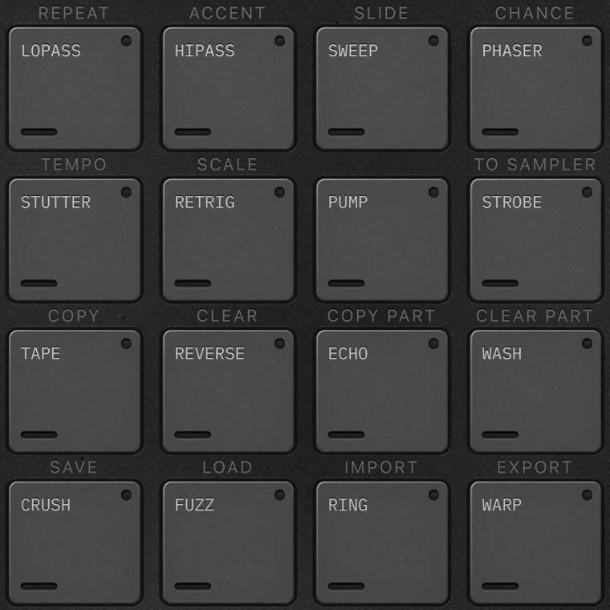
MASTER · LIVE. Effects in four rows by type.
Filter
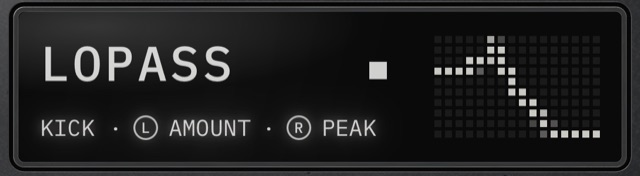
01LOPASS
L AMOUNTR PEAK
Low-pass on the sum, closes with AMOUNT. PEAK sets the resonance.
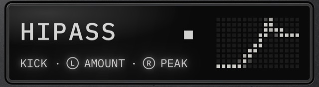
02HIPASS
L AMOUNTR PEAK
High-pass on the sum, opens with AMOUNT. PEAK sets the resonance.
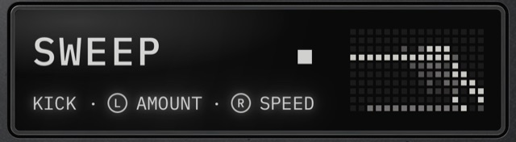
03SWEEP
L AMOUNTR SPEED
A low-pass that moves in time and speeds up with more amount. SPEED steps in note values.
04PHASER
L AMOUNTR SPEED
Phaser with moving notches. SPEED is the rate of the movement.
Rhythm
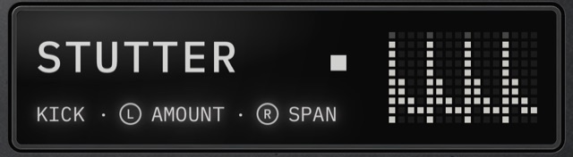
05STUTTER
L AMOUNTR SPAN
Repeats the same slice at even intervals. SPAN is the slice length, in steps of two.
06RETRIG
L AMOUNTR SPAN
Repeats that get shorter and denser. SPAN is the slice length.
07PUMP
L AMOUNTR SPEED
The level ducks on every quarter and comes back. AMOUNT is the depth, SPEED steps in note values.
08STROBE
L AMOUNTR SPEED
Square gate in 16ths, in 32nds with more amount. SPEED steps in note values.
Time
09TAPE
L AMOUNTR WOW
Tape stop: tempo and pitch wind down. WOW adds wobble (default 0).
10REVERSE
L AMOUNTR SPAN
Plays what you just heard backwards. SPAN is the slice length.
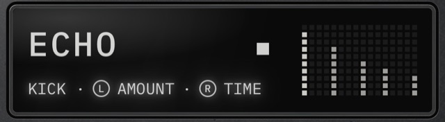
11ECHO
L AMOUNTR TIME
Echo on the sum. TIME is the distance in steps: 1, 2, 3, 4, 6 or 8 (default 3). More AMOUNT means longer repeats. Repeats bounce left and right.
12WASH
L AMOUNTR SIZE
Long reverb on the sum. SIZE is the room size.
Colour
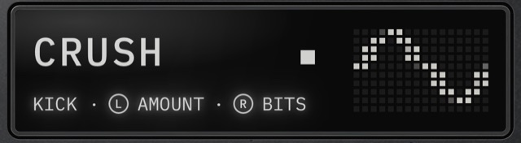
13CRUSH
L AMOUNTR BITS
Bitcrusher. BITS is the resolution, coarser to the left, finer to the right.
14FUZZ
L AMOUNTR COLOR
Distortion that clips the wave top and bottom. COLOR goes from dark to bright.
15RING
L AMOUNTR FREQ
Ring modulator. FREQ is the frequency of the carrier.
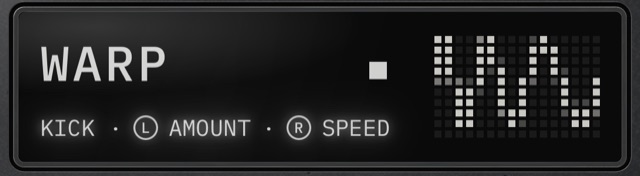
16WARP
L AMOUNTR SPEED
Wobbling pitch: the wave is squeezed and stretched in time. SPEED is the wobble rate.
MUTE and SOLO
2ND, then SOUNDS opens MUTE. The pads show the drums of the selected kit, the synth instruments, or the pads of the selected bank. A tap mutes or unmutes one sound. A muted pad shows a speaker symbol.
In MUTE, tap the selected part on the switch again: it plays solo, and all sounds of the other two parts are muted. Tap again for all. SOLO is one undo step; single mute taps are not. 2ND leaves MUTE.
08Tracks, SAVE, LOAD, files
A track is a whole project: 16 patterns, chain, tempo, swing, scale, root, all sound settings, SHAPE values, effect characters, mutes, octaves and the last selected sounds. There are 15 slots, TR 01 to TR 15. All of them are yours. There are no demo slots; ready-made pieces live under STYLE.
Function
How
SAVE
SAVE · PICK SLOT. The current slot saves at once. A free slot takes the track, and you keep working there. A used slot asks first: the red LED blinks and the display says OVERWRITE TR 03? TAP AGAIN. Pad 16 (FILE) writes a backup file.
Names
Exactly two capital letters, no keyboard. In SAVE, knob L picks the first letter and knob R the second. SAVE suggests the first free name. On a new slot, untouched knobs use the suggestion. If a name is taken, the next free one is used. The confirmation reads like SAVED TR 05 · AC.
LOAD
LOAD · PICK TRACK. A used slot opens its track. The current track is saved first. A free slot starts a new, empty track (NEW · TR 05, 120 BPM); the first free slot is labelled NEW. Undo starts fresh after LOAD.
Backup
SAVE, pad 16: a .squawk file with the track and the sampler banks it uses, including your recordings. File name e.g. “TR 03 2026-11-11 14-03.squawk”. Opens on release; drag off the pad to cancel.
IMPORT
Shows only backups and audio files. A backup replaces the current track (one undo step) and brings its banks onto the device. An audio file lands on the sampler pad you used last. Opens on release.
EXPORT
WAV of the pattern (4 passes) or of the chain (1 pass). It loops cleanly: reverb and delay tails from the end are already at the start, and the length is sample-exact. 24-bit with dither, 48 kHz, stereo. File name e.g. “SQUAWK TR03 PTN01 128BPM.wav”. Opens on release.
Autosave
About one second after every change, into the current slot. In this beta, see the fresh start in chapter 11.
UNDO
2ND, then ●. Global, 64 steps. The display names what was undone, e.g. UNDO · CLEAR. LOAD starts a new undo history.
RESET (2ND, then SHAPE)
Going back to factory is called RESET and lives in one place. Every pad asks first (red LED, … ? TAP AGAIN). Only the second tap acts.
Pad
What
Undo
SOUND
This one sound back to factory. On your own recording, it clears the pad.
yes
PART
The whole part back to factory: kit, instrument or bank. Recordings stay.
yes
TRACK
Empties this track. Its name stays. Ready-made pieces are under STYLE.
yes
ALL TRACKS
Empties all 15 tracks. Names and recordings stay.
no
ALL BANKS
All sampler banks back to factory. Your recordings are deleted.
no
LIKE NEW
Everything as freshly installed: all tracks, names, banks and recordings are deleted. RAIN waits in TR 01, and the tour starts again.
no
09MIDI, AUv3, iPad and Mac
MIDI (in and out)
Notes, clock, start, stop, continue, song position. Ports and virtual ports are called SQUAWK. USB MIDI works directly. Bluetooth MIDI must be paired first, for example in a host app.
Fixed channels in the app: synth 1, sampler 2, drums 10. Notes 36 to 51 are pads 1 to 16; on the synth, note 36 is C2. Notes play like pads, and velocity is used.
Outgoing notes carry the velocity of the step (VELO), and accents go out louder.
Program change 0 to 15 on any channel picks pattern 1 to 16, at the end of the current pattern.
Whoever starts first leads. If SQUAWK starts itself, it sends clock and ignores incoming clock. Otherwise it follows the incoming clock and keeps running if the clock stops.
SQUAWK filters its own echo and listens to one clock source at a time.
The LED at “MIDI IN · OUT” shows the connection. While MIDI is connected, audio keeps running in the background.
AUv3
In the host the plug-in is listed as “Holzäpfel: SQUAWK”. It shows the same interface and fits any window from 300 × 300 pt. One instance per song is enough, since it holds all three parts.
MIDI in the plug-in is omni: notes on every channel play the part selected on the switch, with the same note map as above. Outgoing MIDI stays on the fixed channels.
Tempo and swing are host parameters. The host saves the state. The engine runs at 48 kHz and converts other rates. The plug-in reports 55 samples of latency.
LOAD in the plug-in opens the tracks of the app, read-only, as one undo step. The sampler banks are the same as in the app.
Not in the plug-in: microphone, SAVE to slots, pack scanning, GENE LAB and the tour. RESET offers only SOUND, PART and TRACK. One stereo output.
iPad and landscape
The same parts, arranged by the window’s aspect ratio. No new words, no menu.
Tall window: the iPhone layout, scaled up.
Wide window (iPad landscape, many host windows): switch and pads on the right, display, knobs and keys on the left.
Very flat window: a strip with the keys at the edge.
The iPhone app stays in portrait. The iPad app runs in all four orientations.
Mac with Apple silicon
A click is a tap, click and hold is a hold. Drag knobs vertically, double-click to reset. EXPORT and backups go through the Mac share menu (“Save”).
There is only one pointer. Two-finger moves do not work: hold a step and turn a knob, parameter locks, two pads at once, hold an effect and turn AMOUNT. Set the knobs first instead.
No haptics on the Mac.
10Hold any key for help
Hold to learn. Hold any key for about half a second. It still does its job at once, and line 2 adds a short guide as scrolling text. Let go to stop it. Example for ●: RECORD. NOTHING CHANGES WITHOUT IT.
Second functions: tap 2ND, then hold the engraved pad or key. You get the explanation, and the function works as usual. 2ND itself and the pads have no hold help, because holding a pad records, holds a step or holds an effect.
When you pause. After about 1.5 s without input, line 2 explains the current view, e.g. TAP = LISTEN · ● = WRITE STEPS. A knob explains itself the same way after you stop turning: DECAY · HOW LONG IT RINGS. Any input hides it. Status comes before explanation.
Glow tips answer an input at once, e.g. ● = WRITE STEPS when you try to write without ●.
The tour lights the next control in orange, see chapter 2.
Accessibility: VoiceOver and Voice Control use the English names and the same guides. Reduce Motion turns off the lamp test, scenes and fades, and the tour glows steadily instead of breathing. Increase Contrast makes engravings and pad text brighter.
Someone lives in the box. Now and then a small figure appears in the pixel field when it is free. That is intended. Any input ends it.
Things to try
Outside the beta, each start shows one of these tips, from simple to deep. In this beta every cold start counts as the first, so you will mostly see PRESS ▶ TO PLAY. Here they are:
2ND, then STEPS: STYLE, 16 ready beats to build on.
● and ▶ record what you play on the pads. It adds up, like a tape.
SAMPLER, stopped: press ●, hold a pad and make a noise. It records until you let go.
Turn TONE and DECAY while it plays. 2ND + knob switches them to FILTER and ATTACK.
SYNTH, SOUNDS, CHORDS: every pad plays a chord that fits the scale. 2ND, then SCALE changes it.
SAMPLER, stopped: press ●, in SOUNDS hold a free bank and count to eight. Every number becomes a pad.
2ND, then CHANCE: steps that play only sometimes, so the loop stays alive.
MASTER, then STEPS: effects on single steps.
SHAPE, page GENE LAB on a sampler pad: cross two sounds.
11Beta notes and feedback
Fresh start on every cold launch. In TestFlight builds, SQUAWK starts like the very first time after every cold launch. A cold launch means the app was quit, closed by iOS, or updated. Coming back from the background is not a cold launch.
Kept: every slot you saved with SAVE, including everything autosaved there afterwards. All sampler banks, with your recordings and pack sounds.
Dropped: work you never saved: the start piece you played with, a STYLE piece you never saved, and NEW tracks without SAVE.
After the restart: RAIN sits in the first free slot and is the current track. The tour and the start tips begin again.
The plug-in is not affected; there the host saves the state.
So: if you want to keep something, use 2ND, then SAVE, and tap a slot.
Recent changes
Tour: 14 steps on first start, from ▶ to the microphone. The next control breathes orange, line 2 names the step. Any other key ends it; it starts again next time until you finish it once.
YOYO: a new model on SHAPE · MODEL for the Plaits-based synths. Knob R is ENERGY, in four zones: STILL, BREATH, BLOOM, STORM.
SHAPE · SPACE is now DISTANCE · PLACE, with 16 places built to the tempo. BOX sounds as before.
MASTER: AMOUNT fully left is dry for all 16 effects, so you can fade an effect in and out.
GENE LAB: the knobs move smoothly, and PARTNER and MUTATE explain themselves when you pause.
STYLE (2ND, then STEPS) is the one place for ready-made material: 16 pieces, with RAIN, NIGHT, FEVER and COMET in the first row. A tap replaces the whole track, as one undo step, and asks first if the track holds your work.
No demo slots. All 15 track slots are yours.
PATTERN and STYLE stay open, so you can listen through.
Sound: all kits play at the same loudness, effects stay stereo, the reverb has a short pre-delay, and the kick ducks basses and pads.
SHAPE page 16 is now GENE LAB (PARTNER · MUTATE). It crosses two sampler sounds.
CHANCE adds 2:2 and 4:4.
The empty-pattern hint now points to STYLE: EMPTY · TAP PADS OR 2ND STYLE.
Things to try in this build
Follow the tour once to the end. On another cold start, leave it halfway with a different key.
SYNTH, SHAPE, page MODEL: turn L to YOYO. Play a few notes and turn ENERGY from STILL to STORM. Set steps with different VELO.
SHAPE, page SPACE: put the snare in CANYON or YARD and change the tempo. The walls move with it. Try DISTANCE near and far.
MASTER, LIVE: hold an effect and turn AMOUNT slowly from fully left. There should be no jump and no click.
GENE LAB on a sampler pad: turn PARTNER and MUTATE fast, then pause.
Sending feedback
Screenshot: take a screenshot in SQUAWK, tap the thumbnail, then tap the share button and choose “Share Beta Feedback”. Add a line of text.
Without a screenshot: open the TestFlight app, pick SQUAWK, tap “Send Beta Feedback”.
After a crash, TestFlight offers to send a report. Please accept and add what you were doing.
Helpful in every report: what you did, what you expected, what happened. Which keys were lit, and what the display said. Headphones, audio interface or host app, if any.
Sound reports: name the track or STYLE piece, the pattern and the tempo from the status line.
Please test especially
USB audio interfaces with sample rates other than 48 kHz.
MIDI clock from a computer or hardware over long sessions.
Several plug-in instances in one host, and reopening host projects (the sampler banks should be found again, without copies).
GarageBand and Logic on the Mac, and microphone and MIDI on the Mac.
Sample packs from your own library.
Known limits
No Ableton Link.
No stems. Export single parts via SOLO.
No MIDI CC. In the plug-in, only tempo and swing are host parameters.
The synth is monophonic. CHORDS plays one chord per step.
At most 16 steps. One pattern length for all parts. No triplets.
Live input is quantised to 16ths.
Parameter locks for TONE and DECAY only.
GENE LAB works on sampler pads only.
At most 16 sounds can stand at a place other than BOX at once. A 17th plays in BOX.
The plug-in has one stereo output.
On the Mac there is one pointer, so no two-finger moves.
Bluetooth headphones add latency, as in every app. SQUAWK does not compensate for it.
By design
These will not come, because they would turn the device into a small DAW: piano roll, song arrangement editor, mixer page, effect racks, menus, a second screen, hidden key combinations, a keyboard for names, numeric entry for patterns.
12Eight ways in
Each store image stands for one way through the app. Know these eight and you know SQUAWK.
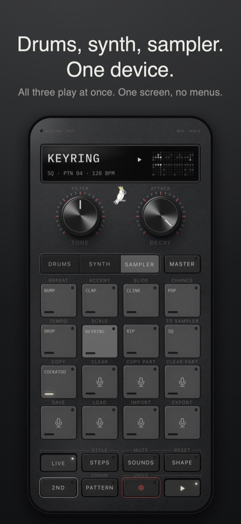
1 · One device, three parts
Drums, synth, sampler. One device.
Open the app and press ▶. RAIN plays.
The switch DRUMS · SYNTH · SAMPLER picks which part the pads play. All three keep playing.
In LIVE, tap the pads; the selected part plays along.
● and ▶ start recording with a count-in. New hits add up. ▶ stops and ends the recording.
All three play at once. One screen, no menus.
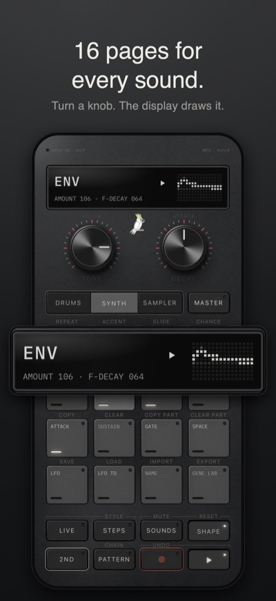
2 · Shape every sound
16 pages for every sound.
In LIVE the knobs set TONE and DECAY. With 2ND they set FILTER and ATTACK.
SOUNDS picks the sound (kit, instrument, bank). There the knobs set two more values, e.g. DRIVE and LEVEL.
SHAPE has 16 pages in four rows: source (MODEL, TONE, PITCH, LEGATO), colour (FILTER, ENV, DRIVE, CHORUS), envelope (ATTACK, SUSTAIN, GATE, SPACE), movement (LFO, LFO TO, NAME, GENE LAB). The display draws every change.
2ND, then SHAPE opens RESET.
Video B “Shape it”, 22 s: a free bank becomes a NOTES bank, then SHAPE with LFO and SPACE.
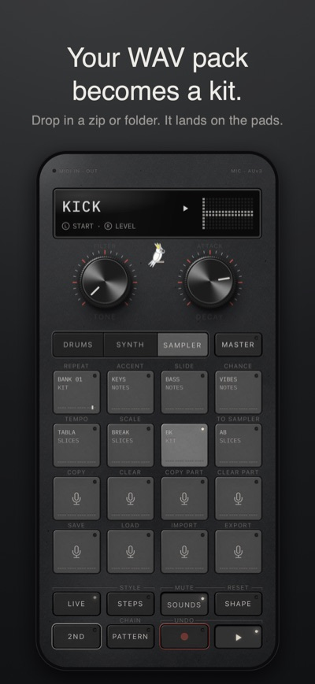
3 · Your own packs
Your WAV pack becomes a kit.
Put a sample pack, zip or folder, into Files › SQUAWK › PACKS.
SQUAWK sorts the sounds by role and builds up to three banks from bank 7: a KIT in the layout of the factory kits, plus NOTES and SLICES.
The 16 sampler banks belong to the device. Every sound is available in every track and in the plug-in.
Drop in a zip or folder. It lands on the pads.
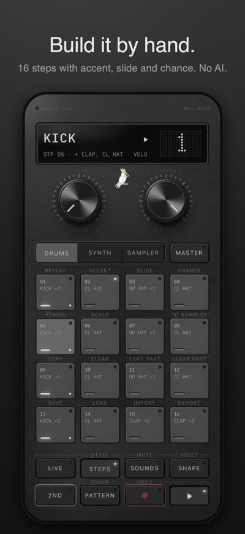
4 · Build it by hand
Build it by hand.
STEPS turns the pads into 16 steps.
Turn on ●. Knob L picks drum or note, knob R the velocity. A tap sets or deletes a step.
Add detail with 2ND: REPEAT, ACCENT, SLIDE and CHANCE.
PATTERN shows 16 patterns; a tap picks and plays. 2ND, then PATTERN chains them. 2ND, then STEPS opens STYLE as a starting point.
16 steps with accent, slide and chance. No AI.
Video C “Build it”, 17 s: kick on 1, 5, 9 and 13, knob L picks CLAP and CL HAT, then PATTERN leads to a full pattern.
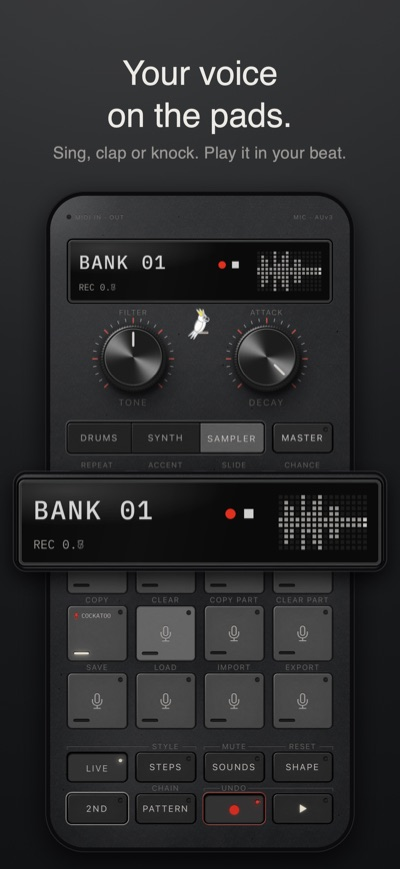
5 · Your voice
Your voice on the pads.
Switch to SAMPLER, turn on ●, keep the sequencer stopped.
In LIVE, hold a pad, make a sound, let go. Up to 60 seconds.
SQUAWK trims the silence and sets the level. A tap plays it.
In SOUNDS, holding a bank records into the whole bank. It becomes NOTES (one sound across the pads in pitch) or SLICES (cut into up to 16 pieces).
Sing, clap or knock. Play it in your beat.
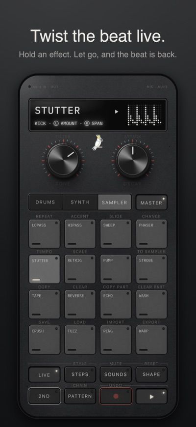
6 · Play it live
Twist the beat live.
MASTER and LIVE turn the pads into 16 effects. An effect works while its pad is held.
Knob L sets the amount, knob R the character, e.g. the echo time.